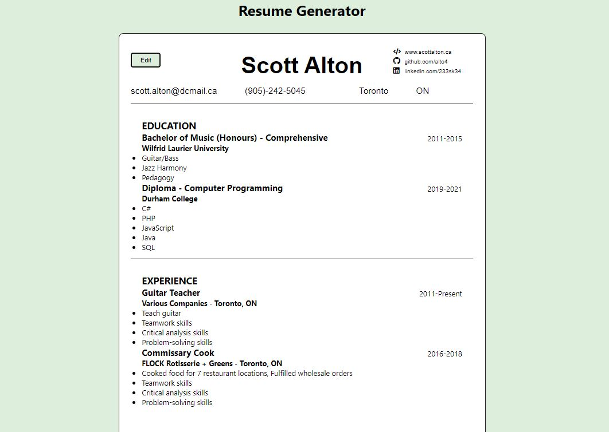

After a couple days off for the holiday week, it felt good to get back into it today and I accomplished quite a lot for the resume generator app.
Initially, I had worried that taking a couple days off to work outside and visit family would seriously wreck my momentum, but today proved that sometimes a break is good, as I came back feeling refreshed and more tactful in my approach to getting tasks done related to the project.
I started by completing the delete button functionality for education and experience entries, then proceeded to work on the edit and descript inputs, which were both a little daunting to get started with, but ended up going pretty smooth after spending some time deciding how to go about making the edits work. My approach was to create a function in the Resume component that would pull data from an array index (experience or education entries), populate the data in the proper form, allow a user to make changes, then resubmit or revoke the changes. Overall, I took this step by step, making use of a simple mocked up object to trace if any updates were being completed, along with the React developer tools, and this approach worked well. The final thing I accomplished was for adding a button component that toggles between edit and preview mode.
Here is a snapshot of the resume generator project after the third day in edit mode:

Here is a sample of the generator project after the third day in preview mode:
